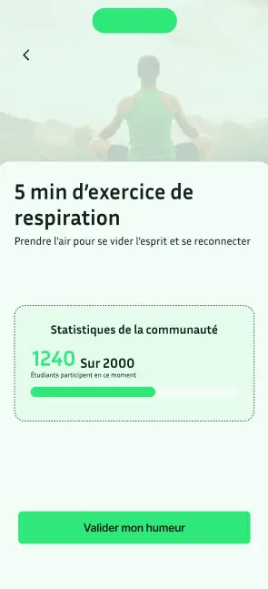
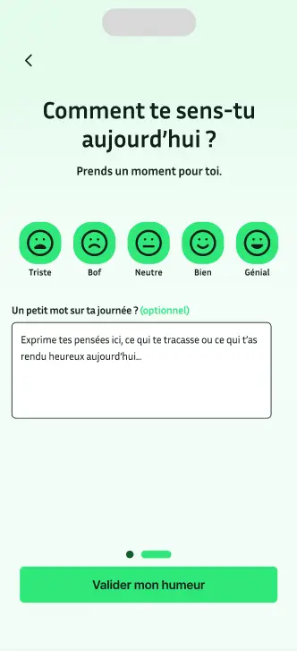
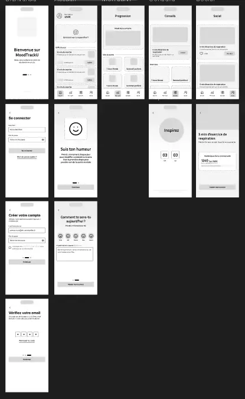
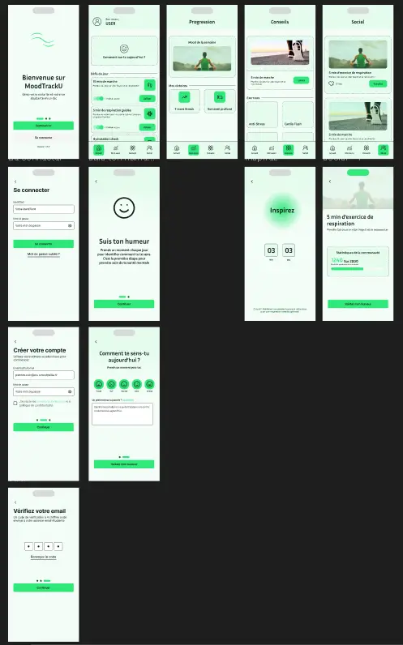
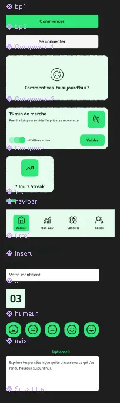

LE PROJET
MoodTrackU est un projet de conception UX/UI réalisé sur Figma. L'objectif était de concevoir une maquette complète et un prototype interactif comprenant au moins deux parcours utilisateurs distincts.
Design System. Parcours Utilisateur. Prototypage.
J'ai imaginé une interface intuitive pour le suivi de l'humeur et du bien-être. Le travail s'est concentré sur la cohérence visuelle, l'ergonomie des interactions et la fluidité de la navigation au sein de l'application.
COMPÉTENCES
- UX Research : Définition des flux utilisateurs (User Flows).
- UI Design : Création des écrans haute-fidélité sur Figma.
- Prototypage : Animation et interactions avancées pour la démo.
MAQUETTES





